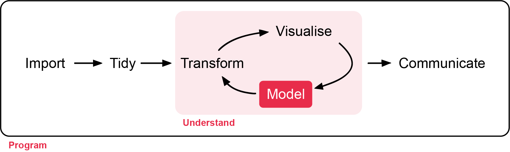
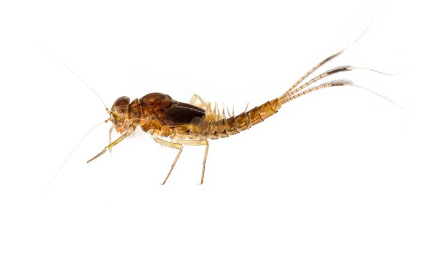
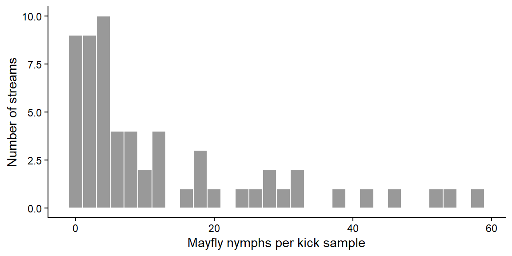
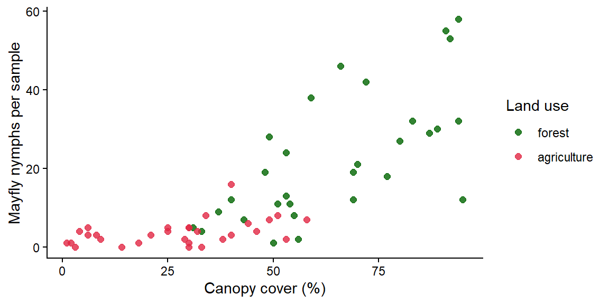
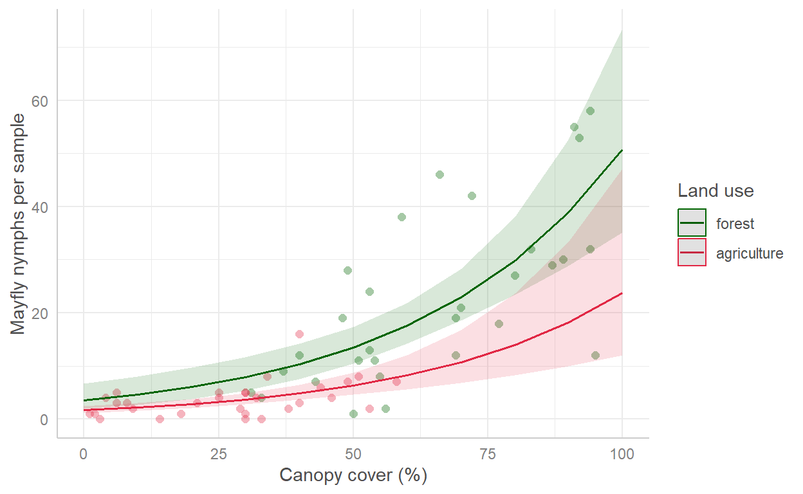

Week 8: Modelling counts with Poisson and negative binomial GLMs
Much of ecology is counting: the number of birds on a transect, seedlings in a quadrat, frogs calling at a pond. Counts break the rules of the linear models from Weeks 5 and 7, because they are whole numbers, cannot be negative, and usually become more variable as the average increases. This week you will learn the generalised linear model (GLM), which handles all of this. Workshop materials are available in the GitHub repository ECS200.

TipLearning outcomes
By the end of this workshop you should be able to:
Explain why counts need a different model from lm(), and what a link function does.
Fit a Poisson GLM and check it for overdispersion.
Switch to a negative binomial GLM when the counts are overdispersed.
Back-transform coefficients into rate ratios and write up the results.
# Week 8 workshop - GLMs for count data# Written by Nicholas Wu, 1234578, 22/04/2027library(tidyverse) # data import, wrangling and plottinglibrary(performance) # checking model assumptionslibrary(see) # draws the plots for performancelibrary(ggeffects) # predictions from models for plotting# The negative binomial model comes from the MASS package, which is installed# with R. We call it with MASS::glm.nb() rather than loading the whole package,# because MASS has its own select() that clashes with dplyr::select().# setwd("C:/Users/YOUR-NAME/Documents/ECS200")
Study context

A mayfly nymph photgraphed with a white background.
Mayfly nymphs (order Ephemeroptera) are sensitive to sediment and pollution, so they are widely used as indicators of stream health. Shading from riparian (streamside) vegetation keeps water cool and supplies leaf litter, while clearing for agriculture adds sediment and nutrients.
A survey of 60 streams (30 in forested catchments and 30 in agricultural catchments) took one standard kick-net sample per stream and counted the mayfly nymphs. Riparian canopy cover (%) was measured at each sampling point.
Question: Is mayfly abundance related to canopy cover and catchment land use?
Often skewed with many small values and a few large ones
Residuals are not normal
Variance increases with the mean
Breaks the equal-variance assumption
Transforming counts (e.g. log(y + 1)) is an old fix that often works poorly, especially when there are many zeros. A GLM models the counts directly.
The two ingredients of a GLM
A distribution for the response. For counts, the starting point is the Poisson distribution, which describes the number of random events in a fixed amount of space or time.
A link function that connects the predictors to the mean. For counts this is the log link:
The model is a straight line on the log scale, which becomes an exponential curve on the count scale, and the predicted mean (\(\mu\)) can never be negative. Because of the log, coefficients are multiplicative: \(e^{\beta_1}\) is the factor by which the expected count changes for every one-unit increase in x. This is called the rate ratio.
Overdispersion
The Poisson distribution makes a strong assumption: the variance equals the mean. Ecological counts are usually more variable than that, because animals cluster, habitats are patchy and there are factors we did not measure. This is overdispersion. If you ignore it, standard errors are too small and p-values too optimistic. The usual fix is the negative binomial distribution, which has an extra parameter (k, or theta in R) that allows the variance to be larger than the mean.
Use the app to compare Poisson counts with overdispersed (negative binomial) counts that have the same mean.
viewof ct_mu = Inputs.range([0.5,20], {value:4,step:0.5,label:"Mean count per sample"})viewof ct_k = Inputs.range([0.3,50], {value:50,step:0.1,label:"Clumping parameter k (small = more overdispersed)"})viewof ct_seed = Inputs.button("Resample 300 samples")
Code
ct_data = {const r =rng(301+ ct_seed);const counts =Array.from({length:300}, () => (ct_k >=50?rpois1(r, ct_mu) :rnbinom1(r, ct_mu, ct_k)));const maxc =Math.max(...counts,Math.ceil(ct_mu *2.5));// expected Poisson frequencies with the same meanconst pois = [];let p =Math.exp(-ct_mu);for (let c =0; c <= maxc; c++) { pois.push({count: c,expected:300* p}); p = p * ct_mu / (c +1); }return {counts, pois};}Plot.plot({width:560,height:280,marginLeft:45,x: {label:"Count in a sample",round:true},y: {label:"Number of samples",grid:true},marks: [ Plot.rectY(ct_data.counts, Plot.binX({y:"count"}, {x: (d) => d,interval:1,fill: grey,inset:0.5})), Plot.line(ct_data.pois, {x: (d) => d.count+0.5,y:"expected",stroke: red,strokeWidth:2}), Plot.dot(ct_data.pois, {x: (d) => d.count+0.5,y:"expected",fill: red,r:3.5}), Plot.ruleY([0]) ]})
Code
html`<div class="app-verdict">Mean = <b>${fmt(mean(ct_data.counts))}</b>, variance = <b>${fmt(variance(ct_data.counts))}</b>,variance / mean = <b>${fmt(variance(ct_data.counts) /mean(ct_data.counts))}</b> (a Poisson distribution gives about 1).Zeros: <b>${ct_data.counts.filter((d) => d ===0).length}</b> observed vs <b>${fmt(ct_data.pois[0].expected,0)}</b> expected under Poisson.${ct_k >=50?"These counts are Poisson: the grey bars follow the red line (the Poisson expectation).":"These counts are overdispersed: there are more zeros and more very large counts than a Poisson distribution (red line) expects."}</div>`
NoteIs a zero really a zero?
Before modelling counts, think about what your zeros mean. A zero can be a true zero (the species really was absent, or was present but by chance was not in the sample) or a false zero (the species was there but you missed it, e.g. a sampling design or observer error). False zeros should be avoided through good design rather than fixed by the model (Blasco-Moreno et al., 2019). See Research Design for examples.
2. Visualise
Code
# Distribution of the counts: skewed, with some zeros and a few large countsggplot2::ggplot(mayfly_data, ggplot2::aes(x = mayflies)) + ggplot2::geom_histogram(binwidth =2, fill ="grey60", colour ="white") + ggplot2::labs(x ="Mayfly nymphs per kick sample", y ="Number of streams") + ggplot2::theme_classic()

Code
# Counts against canopy cover, coloured by land useggplot2::ggplot(mayfly_data, ggplot2::aes(x = canopy_cover, y = mayflies, colour = land_use)) + ggplot2::geom_point(size =2, alpha =0.8) + ggplot2::scale_colour_manual(values =c("forest"="darkgreen", "agriculture"="#e12744")) + ggplot2::labs(x ="Canopy cover (%)", y ="Mayfly nymphs per sample", colour ="Land use") + ggplot2::theme_classic()

Code
# Compare the mean and the variance in each land-use groupmayfly_data %>% dplyr::group_by(land_use) %>% dplyr::summarise(mean =mean(mayflies),variance =var(mayflies),n = dplyr::n())
# A tibble: 2 × 4
land_use mean variance n
<fct> <dbl> <dbl> <int>
1 forest 22.6 264. 30
2 agriculture 3.73 11.0 30
Mayfly counts increase with canopy cover and look lower in agricultural streams. The spread of the counts gets larger as the counts get larger (a fan shape), and the variance is much bigger than the mean, an early warning of overdispersion.
3. Check assumptions
GLMs do not assume normal residuals or equal variances. The key assumptions are:
Assumption
How to check
The chosen distribution fits the data (no overdispersion for Poisson)
performance::check_overdispersion() for a Poisson model; the posterior predictive check in performance::check_model()
No more zeros than the distribution expects
Compare observed and predicted zeros (see below)
The relationship is linear on the log (link) scale
Plot the data; performance::check_model()
Independent observations
Study design (one sample per stream ✅. Otherwise, need to account for repeated sampling).
Step 1: start with a Poisson GLM. Use glm() with family = poisson. The log link is the default for Poisson.
Code
mayfly_pois <-glm(mayflies ~ canopy_cover + land_use,family = poisson,data = mayfly_data)# Is the variance bigger than the Poisson model expects?performance::check_overdispersion(mayfly_pois)
# Overdispersion test
dispersion ratio = 4.291
Pearson's Chi-Squared = 244.583
p-value = < 0.001
The dispersion ratio should be close to 1. A ratio well above 1 with a small p-value means the data are overdispersed, so the Poisson model is not appropriate.
Step 2: switch to a negative binomial GLM.MASS::glm.nb() works like glm(), uses the log link and estimates the extra dispersion parameter (theta) for you.
Then compare the number of zeros in the data with the number the model expects. dnbinom(0, ...) gives each stream’s predicted probability of a zero count, and adding these up gives the expected number of zeros.
Code
# Observed number of streams with no mayfliessum(mayfly_data$mayflies ==0)
[1] 4
Code
# Number of zeros expected by the negative binomial modelsum(dnbinom(0, mu =fitted(mayfly_nb), size = mayfly_nb$theta))
[1] 3.381428
In the posterior predictive check, the data simulated from the model (blue) now look like the real data (green), the other panels look reasonable, and the model predicts about as many zeros as were observed. The negative binomial model is appropriate.
NoteReading check_model() for a GLM (click to expand)
For GLMs, the residuals are not expected to be normal, so check_model() shows slightly different panels. It uses simulated residuals for the “uniformity” or “normality” panels and adds a posterior predictive check: the model is used to simulate many new datasets (blue lines), which should look like your real data (green line). If the simulated data have far fewer zeros or a much narrower spread than the real data, the distribution is wrong.
WarningWhen are these models NOT appropriate? (click to expand)
Many more zeros than even the negative binomial predicts
Zero-inflated or hurdle models (e.g. glmmTMB package). Think first about whether the zeros are true or false (Blasco-Moreno et al., 2019)
Samples differ in effort (different trap nights, transect lengths or areas)
Add an offset: glm(count ~ x + offset(log(effort)), family = poisson). The model then describes counts per unit of effort
Counts out of a known total (e.g. 7 of 20 seeds germinated)
Binomial GLM (Week 11)
Several samples from the same site, plot or individual
Generalised linear mixed model (lme4::glmer(), Week 12)
Very large counts with no zeros and a symmetrical spread
An lm() may be fine. Check the residuals
4. Model
Code
summary(mayfly_nb)
Call:
MASS::glm.nb(formula = mayflies ~ canopy_cover + land_use, data = mayfly_data,
init.theta = 3.517850702, link = log)
Coefficients:
Estimate Std. Error z value Pr(>|z|)
(Intercept) 1.271614 0.323195 3.935 8.34e-05 ***
canopy_cover 0.026562 0.004609 5.764 8.24e-09 ***
land_useagriculture -0.758751 0.239911 -3.163 0.00156 **
---
Signif. codes: 0 '***' 0.001 '**' 0.01 '*' 0.05 '.' 0.1 ' ' 1
(Dispersion parameter for Negative Binomial(3.5179) family taken to be 1)
Null deviance: 209.769 on 59 degrees of freedom
Residual deviance: 67.222 on 57 degrees of freedom
AIC: 370.06
Number of Fisher Scoring iterations: 1
Theta: 3.518
Std. Err.: 0.965
2 x log-likelihood: -362.062
The output gives everything you need:
Coefficients: one row per term.
Estimate: the effect on the log scale. (Intercept) is the log of the expected count for a forest stream with 0% canopy cover (the reference level). canopy_cover is the change in log(count) for each 1% more cover. land_useagriculture is the difference in log(count) between agricultural and forest streams at the same canopy cover. A positive estimate means more mayflies, a negative one fewer.
Std. Error: the uncertainty in each estimate.
z value: the estimate divided by its standard error (GLMs use z instead of t).
Pr(>|z|): the p-value, the probability of an effect this large if the true effect were zero.
Dispersion parameter for Negative Binomial(...) family: the estimated theta (k). Small values mean strongly clumped counts; very large values mean the counts are close to Poisson.
Null deviance and Residual deviance: how badly a model with no predictors and our model fit the data. The bigger the drop, the more the predictors explain.
AIC: a measure of fit that penalises extra parameters, used to compare models fitted to the same data (lower is better).
Theta and Std. Err.: theta again, with its standard error.
The coefficients are on the log scale. Back-transform them with exp() to get rate ratios, which are much easier to interpret.
Code
# Rate ratios and their 95% confidence intervalsexp(coef(mayfly_nb))
# Predicted counts across canopy cover for each land use (with 95% CIs)mayfly_pred <- ggeffects::predict_response(mayfly_nb, terms =c("canopy_cover", "land_use"))plot(mayfly_pred, show_data =TRUE) + ggplot2::scale_colour_manual(values =c("darkgreen", "#e12744")) + ggplot2::scale_fill_manual(values =c("darkgreen", "#e12744")) + ggplot2::labs(title =NULL, x ="Canopy cover (%)", y ="Mayfly nymphs per sample",colour ="Land use", fill ="Land use")

The prediction lines curve upwards because the model is linear on the log scale.
5. Interpret
Term
Rate ratio
95% CI
Meaning
canopy_cover
1.027
1.017–1.037
Each 1% increase in canopy cover multiplies the expected count by 1.027, i.e. 3% more mayflies. Over 10% more cover that is ×1.3
land_useagriculture
0.47
0.29–0.76
At the same canopy cover, agricultural streams have 0.47 times as many mayflies as forest streams, i.e. 53% fewer
A rate ratio of 1 means no effect. If the 95% CI of a rate ratio does not include 1, the effect is significant at α = 0.05.
Methods sentence: Mayfly counts were analysed with a negative binomial generalised linear model (log link) with canopy cover and land use as predictors, fitted with MASS::glm.nb() in R. A Poisson model was rejected because the counts were overdispersed (dispersion ratio = 4.3). Significance was set with α = 0.05.
Results sentence:
Mayfly abundance increased with riparian canopy cover, by 3% for every 1% increase in cover (rate ratio = 1.027, 95% CI 1.017–1.037, p < 0.001). At the same canopy cover, streams in agricultural catchments had 53% fewer mayflies than forested streams (rate ratio = 0.47, 95% CI 0.29–0.76, p = 0.002; Fig. 1).
Pollinator visits in urban gardens and bushland. Urban gardens can provide food for pollinators, but are they as good as native bushland? Observers watched 80 flowering plants of the same native shrub species for 15 minutes each, 40 in urban gardens and 40 in bushland remnants, and counted the number of pollinator visits. They also counted the number of open flowers on each plant (flowers).
Import the data, check its structure, convert habitat to a factor with urban_garden as the reference level, and check for missing values.
Plot the distribution of visits, and plot visits against flowers coloured by habitat. Describe what you see.
Fit a Poisson GLM with flowers and habitat as predictors. Check it for overdispersion. Is the Poisson model appropriate? Explain.
Fit a more appropriate model and check its assumptions with check_model(). Compare the observed number of zeros with the number the model expects.
Calculate the rate ratios and their 95% CIs. In words, how much does the number of visits change (a) for every extra open flower, and (b) in bushland compared with urban gardens?
Plot the predicted number of visits against the number of flowers for each habitat with ggeffects::predict_response().
Write a results sentence.
Twelve plants received no visits. Give one reason why a zero might be a true zero and one reason it might be a false zero in this study, and suggest a change to the design that would reduce false zeros.
NoteHow your assessment is marked
Submit one R script (.R) before the end of the class. Write your answers to written questions as # comments next to the code that produced them.
Score
What it looks like
0
No submission or no attempt.
0.25
Submitted, but a very poor attempt (e.g. incomplete, or lots of gaps).
0.5
Most questions answered, or all answered but most annotations missing.
0.75
All questions answered, but some annotations missing or some answers incorrect.
1
Everything completed, with annotations on all code so the marker can follow it.
Tip: an annotation is a short # comment that says what the line does and why. For example: # remove the one plant with a stem dry mass of 7.4 g (data entry error).
Additional resources
Blasco-Moreno et al. (2019)What does a zero mean? Understanding false, random and structural zeros in ecology: a short, readable paper on designing surveys to avoid false zeros.
Coding Club: Intro to model design covers Poisson models and choosing distributions.